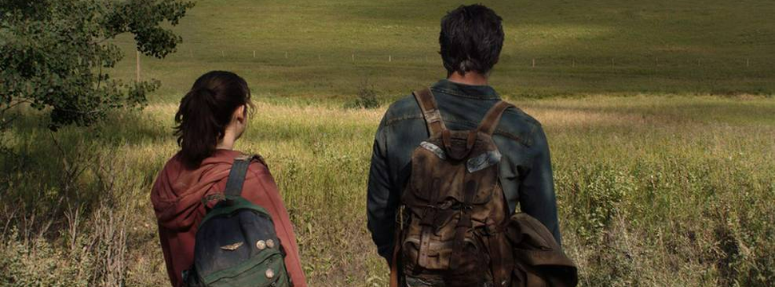
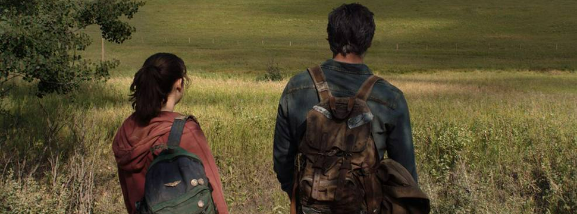
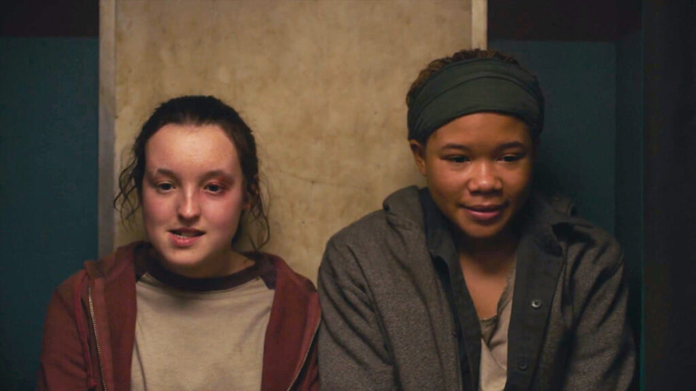
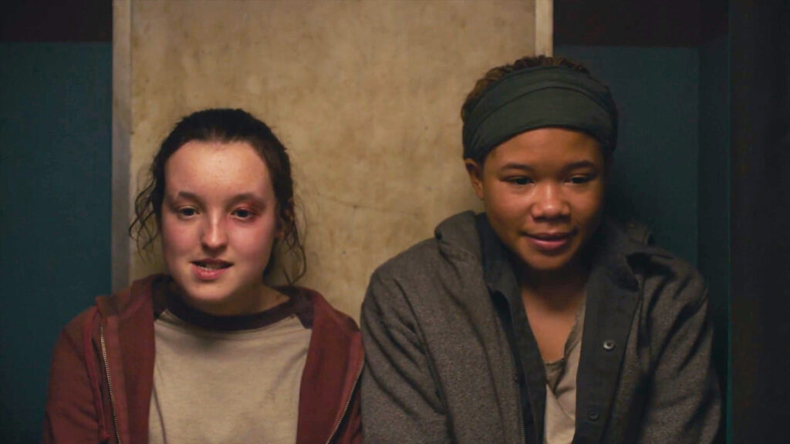

The Last of Us é uma série distópica da HBO baseada na franquia de jogos de videogame de mesmo nome criada por Neil Druckmann. O drama narra um futuro pandêmico que foi devastador para humanidade, deixando os seres humanos à beira da extinção. O vírus transforma pessoas em canibais e se espalha rapidamente com uma simples mordida. Algumas décadas depois, os poucos sobreviventes que restaram vivem viajando ou em quarentenas protegidas por oficiais do governo. Este é o cenário em que acompanhamos Joel (Pedro Pascal), um sobrevivente durão que é contratado para levar a jovem Ellie (Bella Ramsey) para fora da zona de quarentena opressiva onde vive. Os dois devem encontrar um grupo de rebeldes paramilitares que se rebelou contra as autoridades. Porém, eles descobrem no caminho que Ellie está possivelmente infectada com o vírus, apesar da jovem não apresentar os sintomas recorrentes da doença. Por conta disso, eles acreditam que a imunidade de Ellie pode ser a chave para encontrar a cura do vírus e potencialmente salvar a humanidade.
 



 
